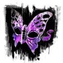
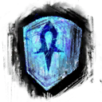
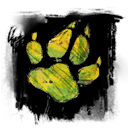

About Guild Wars 2
Guild Wars 2 is an MMORPG or Massively Multiplayer Online Role-Playing Game currently in development by ArenaNet. The game is set in the amazing fantasy world named Tyria. Where players choose to be one of the eight very unique character professions.
Professions in Guild Wars 2
Below are the eight wonderful profession choices players will have available to them upon entering the world of Guild Wars 2!
Mesmer
Mesmers are magical duelists who rely on deception and confusion to keep their opponents in check. Indecision is their greatest ally. Using powerful illusions to distract, they make sure they never go toe to toe with an enemy; they use their powers and tactics to set up an unfair fight.
Engineer
Masters of mechanical mayhem, engineers tinker with explosives, gadgets, elixirs, and all manner of deployable devices. They can take control of an area by placing turrets, support their allies with alchemic weaponry, or lay waste to foes with a wide array of mines, bombs, and grenades.
Thief
A master of stealth and surprise, the thief is deadly in single combat—particularly when catching enemies off guard. Thieves compensate for their relatively low armor and health by being quick and evasive. They can move through the shadows, vanish into thin air, or steal items from their opponents and use them as weapons. Enemies should watch their backs, or the thief will watch it for them.
Guardian
The guardian is a devoted fighter who calls upon powerful virtues to smite enemies and protect allies. As dangerous with a staff as he is with a mighty two-handed hammer, a true guardian is a master tactician who knows when to sacrifice his own defenses to empower his allies to achieve victory.
Necromancer
A necromancer is a practitioner of the dark arts who summons the dead, wields the power of lost souls, and literally sucks the lifeblood of the enemy. A necromancer feeds on life force, which he can use to bring allies back from the brink or cheat death itself.
Ranger
The ranger is a jack-of-all-trades and a master of them all as well, relying on his keen eye, steady hand, or the power of nature itself. A master of ranged combat, the ranger is capable of striking unwitting foes from a distance with his bow. With a stable of pets at his command, a ranger can adapt to his opponents' strengths and weaknesses.
Warrior
The warrior is a master of weapons who relies on speed, strength, toughness, and heavy armor to survive in battle. A warrior can shrug off blow after blow to stay in the fight, all the while building up adrenaline to fuel his offense.
Elementalist
The elementalist channels natural forces of destruction, making fire, air, earth, and water do her bidding. What the elementalist lacks in physical toughness, she makes up for in her ability to inflict massive damage in a single attack, dropping foes from a distance before they can become a threat. Yet, despite her incredible offensive potential, versatility is what makes the elementalist truly formidable.